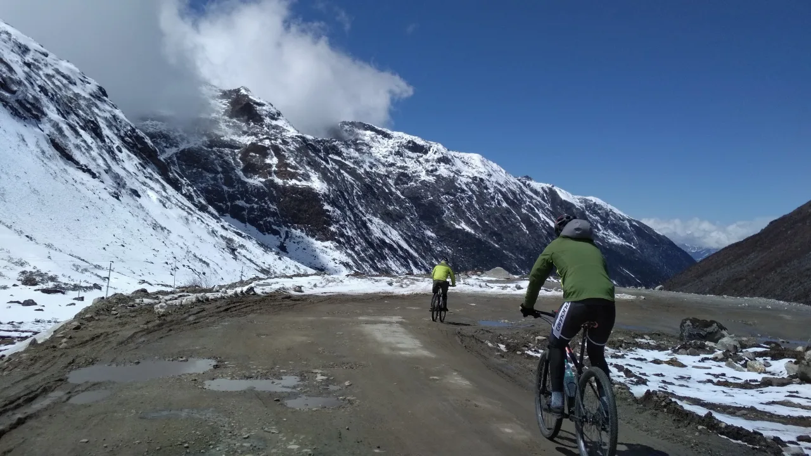

Departures 2026
Cycling · Western Arunachal Pradesh
The Road to Tawang
Cycling in Western Arunachal Pradesh
2 - 10 Oct 2026 and 20 - 28 Feb 2027 · 9 days
Overview
Ride from the valley into the Eastern Himalayas
The Road to Tawang moves from the Brahmaputra Valley into the high mountain country of the Monyul region.
The route sits close to the India, Bhutan and Tibet borderlands, where Himalayan landscapes, Buddhist culture and remote road riding come together.
Along the way, the journey offers time with Monpa, Sherdukpen and Brokpa communities, quiet backroads, mountain settlements and monasteries.
Ride Details
Route character
Journey Flow
The tour in sections
This is an indicative flow. The final route is shaped around your dates, pace, group profile and local conditions.
Climbs along the Bhutan border
Begin on the northern edge of Assam, riding close to the Bhutan foothills through tea country, forest edges and lowland roads before the climb into Arunachal begins.
Enter Monyul
Move into western Arunachal's Monyul region, where the road begins to climb through mountain settlements, monasteries and landscapes shaped by Monpa culture.
The high roads
Ride the more demanding Himalayan section toward Tawang, with long climbs, sharp weather shifts, high passes and wide mountain views.
Detailed itinerary
Ask for the full route plan and cost
The itineraries are unique, so the detailed route and cost are shared directly after understanding your dates, pace and group size.
Photo Gallery
Moments from the Road to Tawang
Enquire
Plan The Road to Tawang
Share a few details and we will get back to you with the best route, duration and cost options.